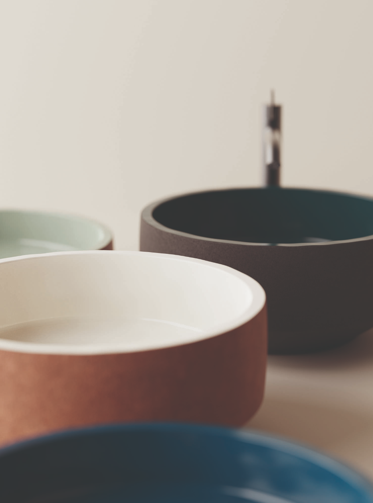

Design Philosophy
Patricia Urquiola’s design philosophy blends comfort, innovation, and emotion. Her work explores soft forms, playful structures, and rich materials to create pieces that feel both modern and human.



Human-Centered Design
Patricia Urquiola’s design philosophy focuses on creating pieces that feel personal, comfortable, and emotionally engaging. Rather than following strict rules, she explores how design can connect with people through soft forms, inviting textures, and a sense of warmth. Her work often blurs the line between function and feeling, making everyday objects more meaningful.
She is known for experimenting with materials, colors, and unconventional shapes, combining traditional craftsmanship with modern innovation. This approach allows her designs to feel both familiar and unexpected at the same time. Through this balance, Urquiola creates furniture that is not only visually striking but also adaptable to different spaces and lifestyles.